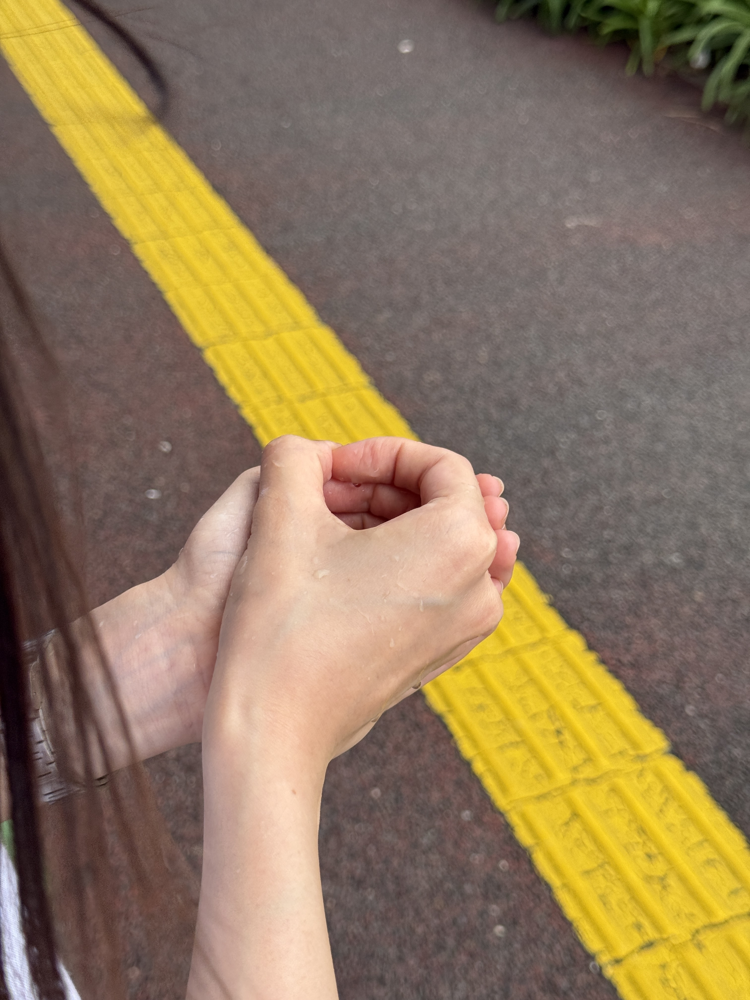

成川沙余夏がバイトをしている西千葉工作室へ遊びに行った。
たまたま止めた駐車場の前が前澤友作の自宅の前で、玄関までの道に大きな銅板がカーブした通路？があり、セラの作品のようだった。
工作室は木彫りのスプーンを作った。二股の。
たまたま止めた駐車場の前が前澤友作の自宅の前で、玄関までの道に大きな銅板がカーブした通路？があり、セラの作品のようだった。
工作室は木彫りのスプーンを作った。二股の。


2026.07.04

